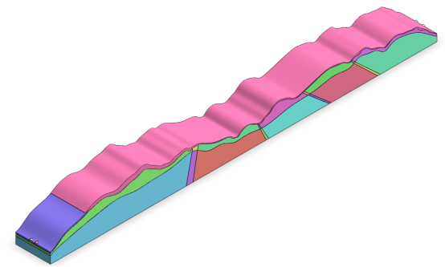
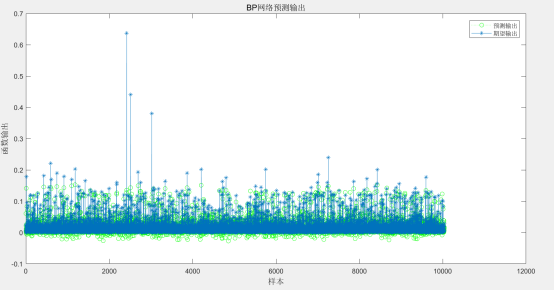
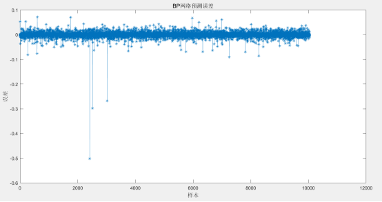
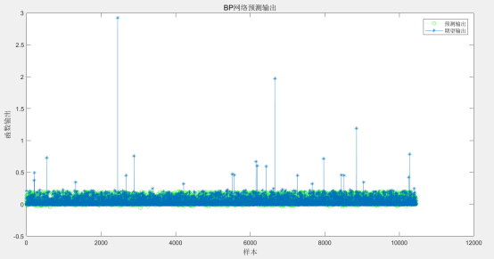
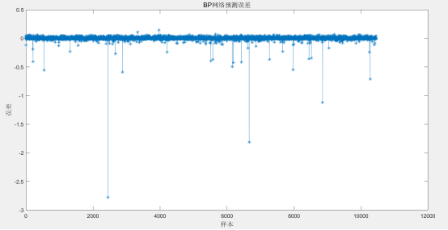

章庄隧道位于吉安市安福县章庄乡附近，为一座分离式隧道，其起止桩号为ZK46+450～ZK48+190/ K46+465～K48+205，隧道长度为1740/1740 米，净空（宽×高）10.75×5 米。按照《公路隧道设计规范第一册土建部分》（JTG 3370.1-2018）分级，该隧道属于公路长隧道。本隧道岩性主要为粉质粘土、碎石土、全-中风化板岩。隧道洞身工程地质情况复杂，岩性主要以板岩为主，为破碎至较破碎，局部较完整岩体。物探显示隧址区内发育有较多、较宽的裂隙带，在这些裂隙密集带中，为破碎岩体。隧道出口段地层主要为强风化板岩，为极破碎至破碎围岩，质地软，遇水易软化，自稳能力差，隧道出洞口左幅为浅埋偏压段，加强支护措施。其中隧道左幅：Ⅲ级围岩占16.7%，Ⅳ级围岩占59.8%，Ⅴ级围岩占23.6%。隧道右幅：Ⅲ级围岩占16.7%，Ⅳ级围岩占60.0%，Ⅴ级围岩占23.3%。隧道开挖方法为双侧壁导坑法。
依据施勘报告，隧道轮廓截面洞型取“五心圆+仰拱”型。根据经验，侧宽的分析范围取为距离隧道内轮廓边缘3~5倍隧道净宽的区域，深度的分析范围取为距离隧道内轮廓底部3~5倍隧道净高的区域。模型以反重力方向为Z方向正向，隧道延伸纵向为Y方向正向，隧道，根据右手螺旋定理，隧道径向为X方向。

图 1 章庄隧道几何模型

图 2. 章庄隧道出口预测输出和期望输出图

图 3. 章庄隧道出口预测误差图
由图2可知，章庄隧道出口预测输出和期望输出结果基本吻合，走势基本一致。由图3可知预测数据和真实数据两者的误差基本在-0.05~0.05之间，误差范围较小，表明神经网络预测结果基本满足要求。

图 4. 章庄隧道入口预测输出和期望输出图

图 5. 章庄隧道入口预测误差图
由图4可知，章庄隧道入口预测输出和期望输出结果基本吻合，走势基本一致。由图5可知预测数据和真实数据两者的误差基本在0.00附近，误差范围较小，表明神经网络预测结果基本满足要求。